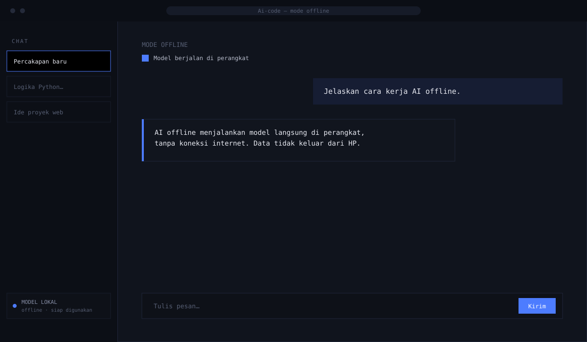

Pratinjau antarmuka proyek
01
Dalam Pengembangan
Offline AI Mode
Mode offline untuk aplikasi AI — supaya asisten AI tetap bisa menjawab tanpa koneksi internet, dengan model yang berjalan langsung di perangkat. Versi yang mendukung model GGUF dan BIN sedang dikerjakan di repositori terpisah.
GitHub
Repositori terkait: Offline-Ai-version